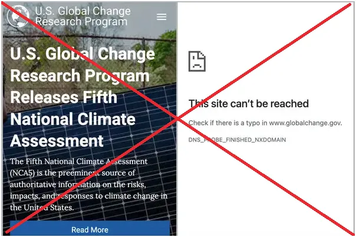
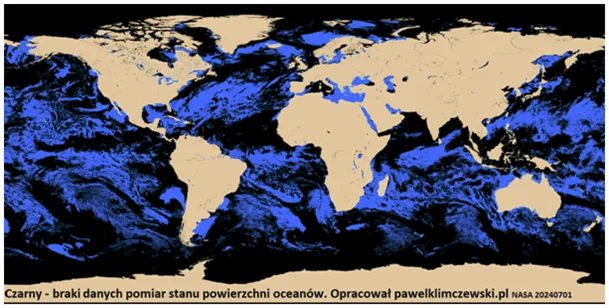

Opór ma sens !!! Strona globalchange.gov została wyłączona
Strona globalchange.gov – czyli oficjalny serwis U.S. Global Change Research Program (USGCRP) – została niespodziewanie wyłączona. W lipcu 2025 administracja Trumpa zadecydowała o zamknięciu strony globalchange.gov, zniknęło wraz z nią pięć wersji National Climate Assessment – oficjalnych raportów na temat zmian klimatu.

Strona i raporty, dostępne wcześniej za darmo, zostały usunięte bez podania alternatywy, co wywołało krytykę naukowców jako „cenzurę naukową” . Usunięcie stron i raportów znacznie utrudnia dostęp do tych danych, co naukowcy krytykują jako „usuwanie wiedzy i odbieranie społeczeństwu prawa do wyników finansowanych z podatków.
Przez ostatnie klika lat często falsyfikowałem dane z takich stron, w mojej ocenie czasem były to patologie kryminalne. Wnioskowanie o klimacie Arktyki i Antarktydy z danych satelitarnych, gdzie 98% obserwowanej powierzchni z powodu zachmurzenia to braki danych jest naukowym absurdem, a finansowanie takich badań i nadawanie im miana dowodów, jest malwersacją.
Opór ma sens !!!
Przypominam kryminał pt. "Globalne ocieplenie z satelitą Unii Europejskiej w tle " To są wyniki bardzo pracochłonnego śledztwa, proszę o promocję i wsparcie strony z poniższym tekstem: https://pawelklimczewski.pl/2024/12/11/kryminal-pt-globalne-ocieplenie-z-satelita-unii-europejskiej-w-tle/

Kolejny przekręt stulecia to niezgodna z zasadami matematyki definicja średniej temperatury dobowej przyjęta globalnie w 1996 r. Od tej chwili "obserwujemy efekt kija hokejowego". Że nie jest to matematyczna średnia urzędnikom nie przeszkadza, bo działa na masową wyobraźnię. Szczegóły na: https://pawelklimczewski.pl/2025/05/06/srednia-sredniej-nie-rowna-czyli-przewal-stulecia/
Paweł Klimczewski